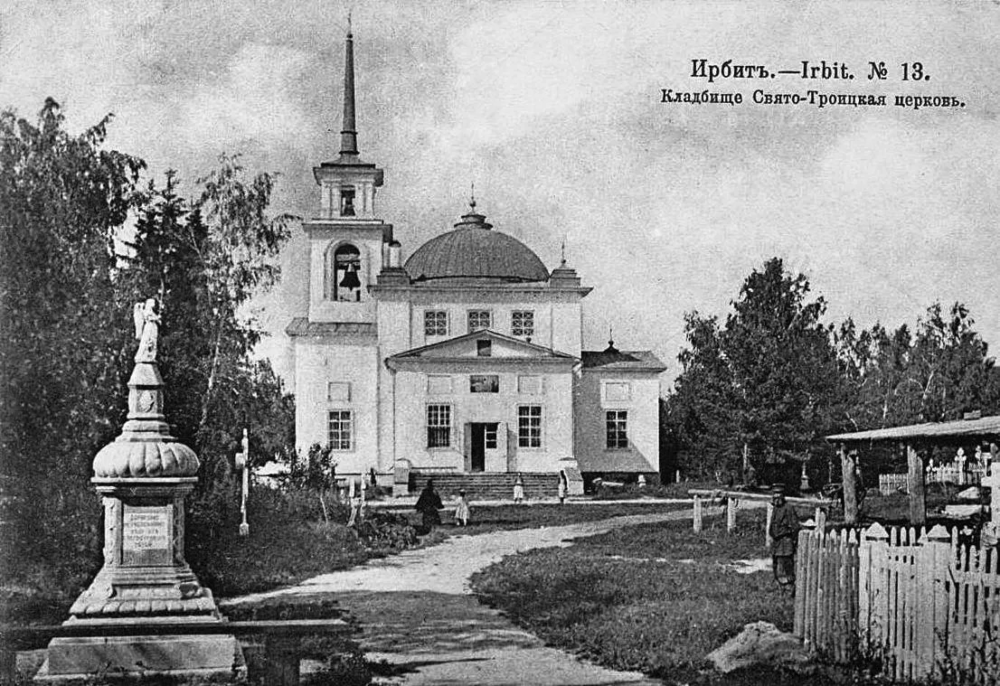

Свято-Троицкий собор
Духовный центр купеческого Ирбита
Свято-Троицкий собор — главный православный храм Ирбита и одно из самых величественных архитектурных сооружений города. Его история неразрывно связана с расцветом Ирбитской ярмарки, ведь строительство собора велось в основном на пожертвования местных купцов.

Собор, построенный в XIX веке в стиле классицизма, поражает своим масштабом и красотой. В годы советской власти храм был закрыт и сильно разрушен, но в начале XXI века началось его масштабное восстановление. Сегодня это не только действующий храм, но и визитная карточка города.
Рядом с собором находится колокольня и живописная набережная реки Ницы. Это место, где можно неспешно прогуляться, насладиться тишиной и прикоснуться к вековой истории Ирбита.